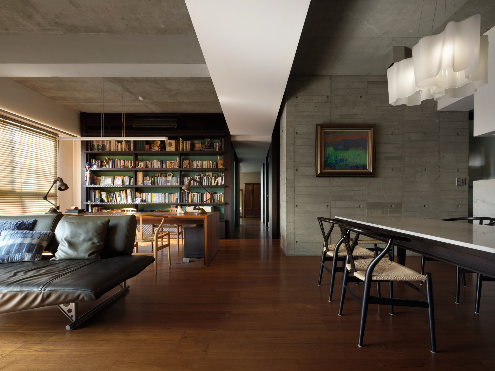
建築與詩
清水模牆把公共區分成兩半：一邊是書牆與長桌，一邊是大理石餐桌與油畫。天花上一條白帶順著這道牆往裡走，把視線帶進走廊。深色木作拉門串起私領域，每扇門框住的房間都換一種牆色：綠牆配木百葉，棕牆配一對壁燈。午後的光從整排木百葉進來，落在木地板上。走廊兩端各有一個盡頭：一端是紅木古櫃，另一端是清水模牆前的鋼琴。濕區用兩種相反的材質收尾：浴室是清水模與米色馬賽克，廚房是不鏽鋼與白色大理石。
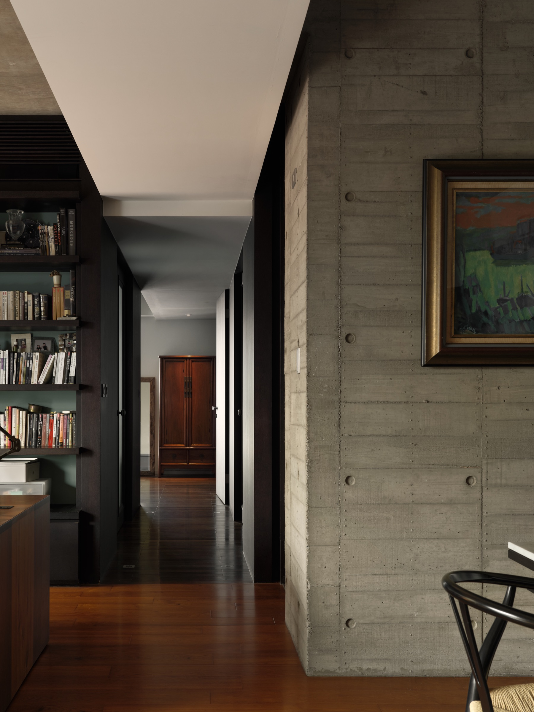
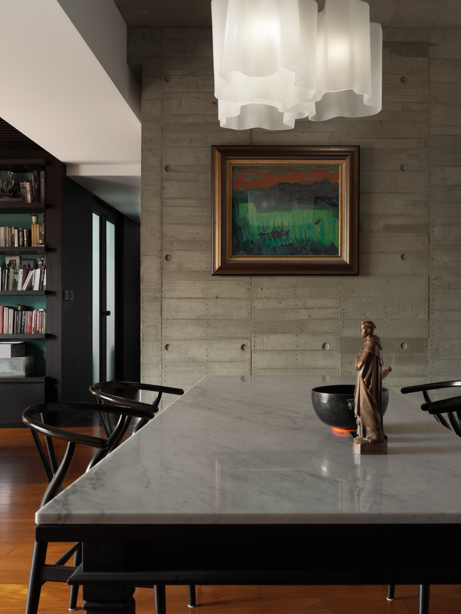

午後的光從整排木百葉進來。窗外的植栽、橘色燈罩、皮椅，都在同一道逆光裡。
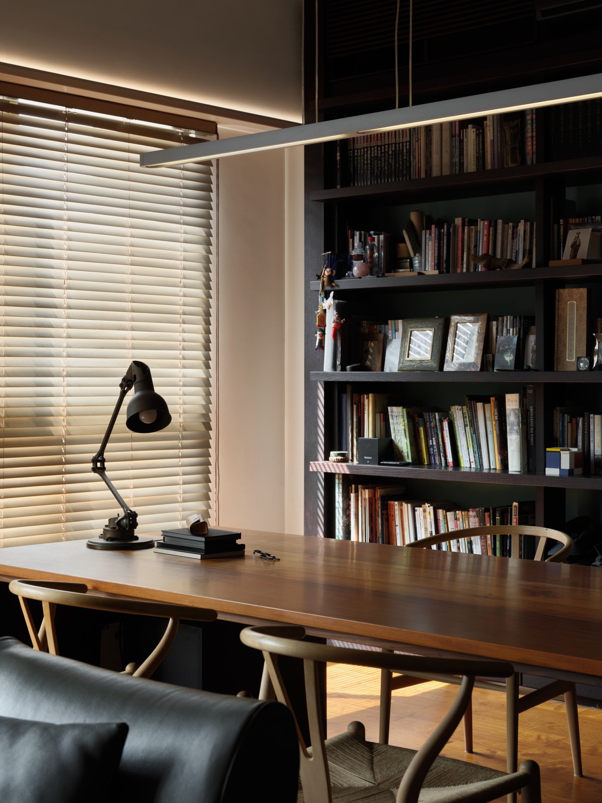
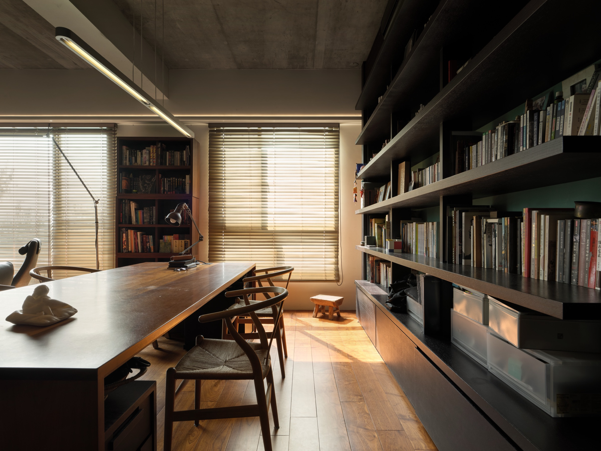
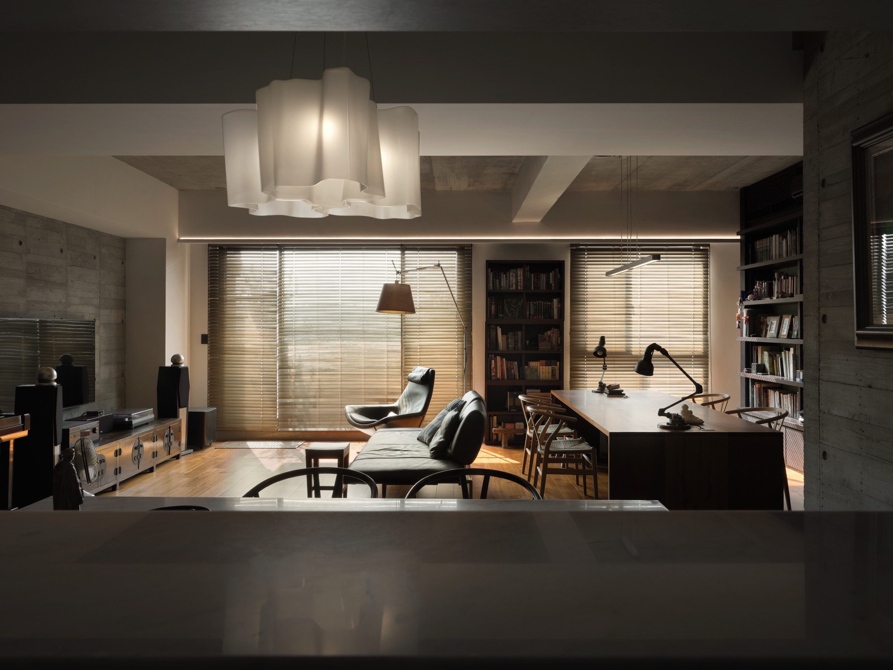
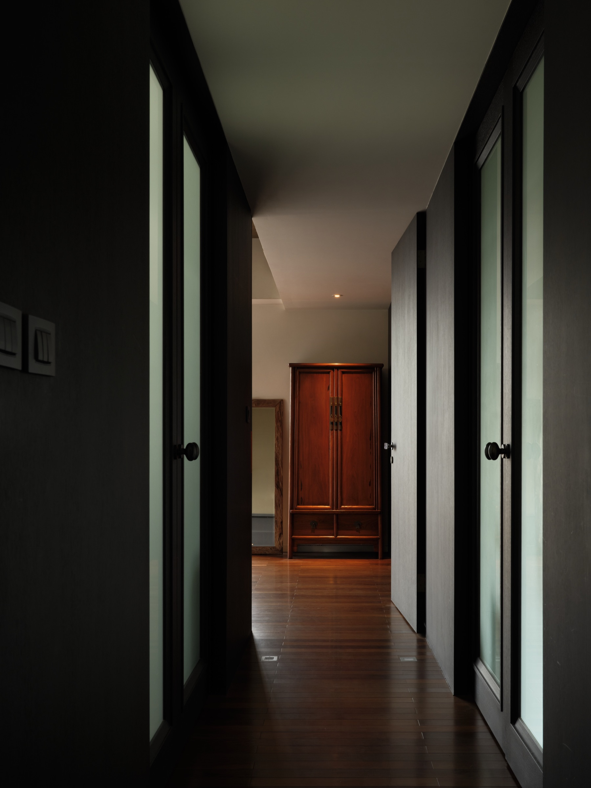
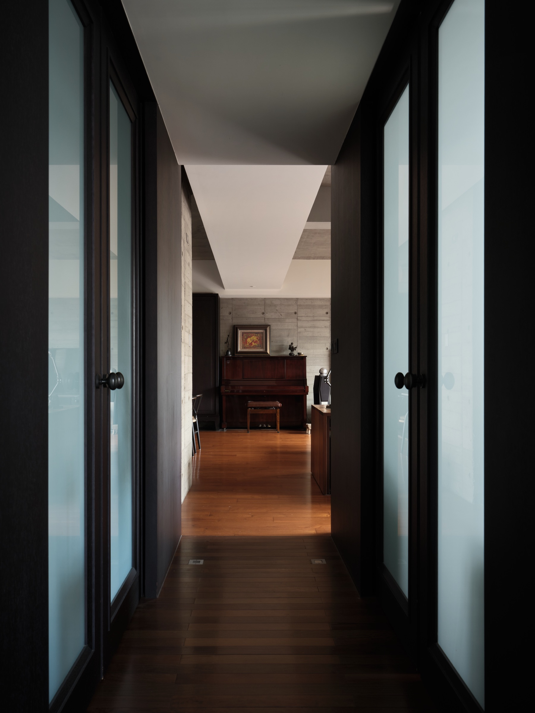
同一條走廊，兩個方向。
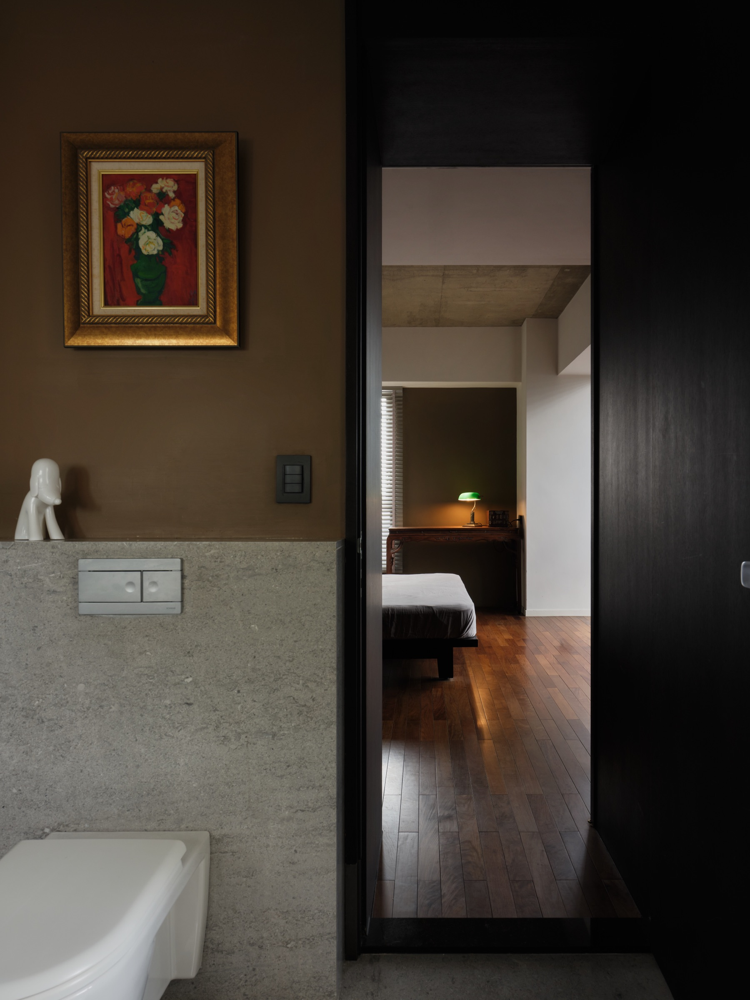

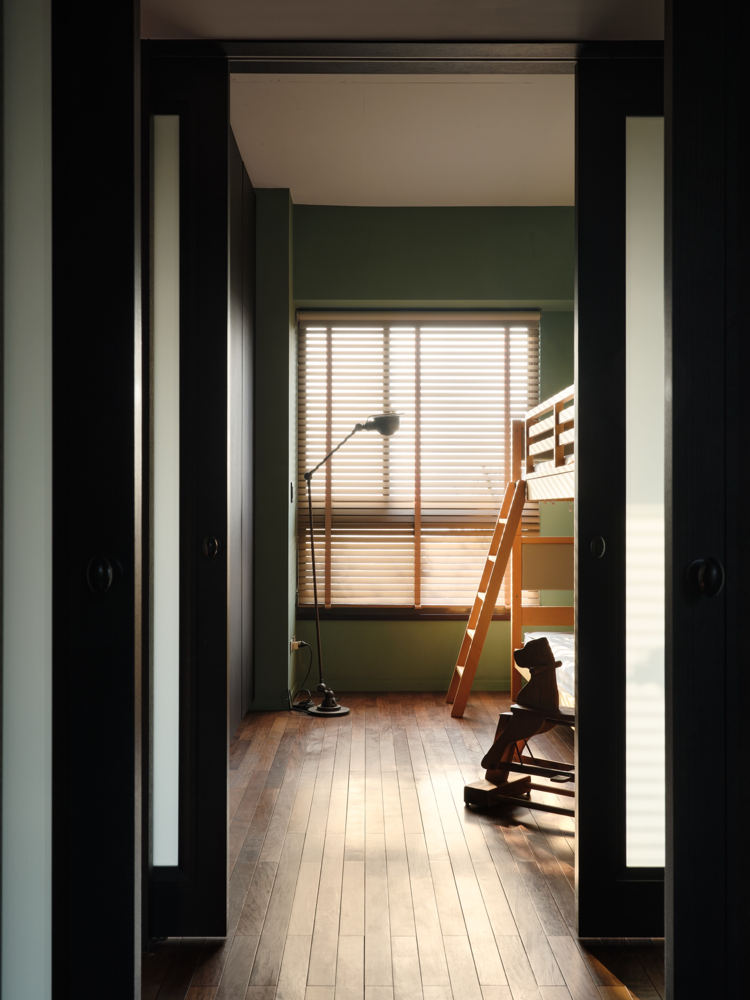
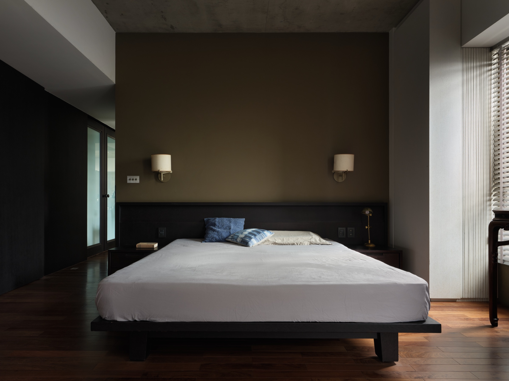
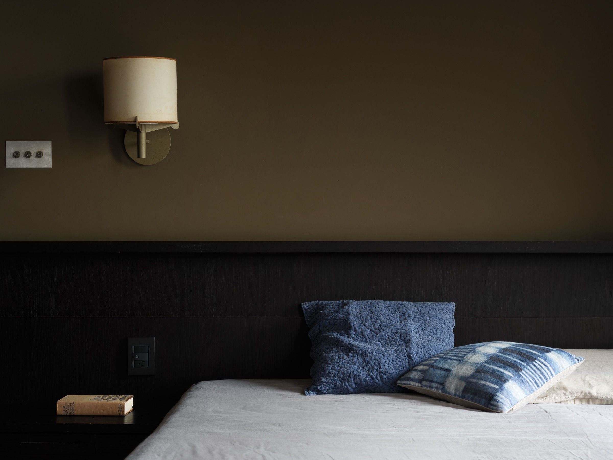
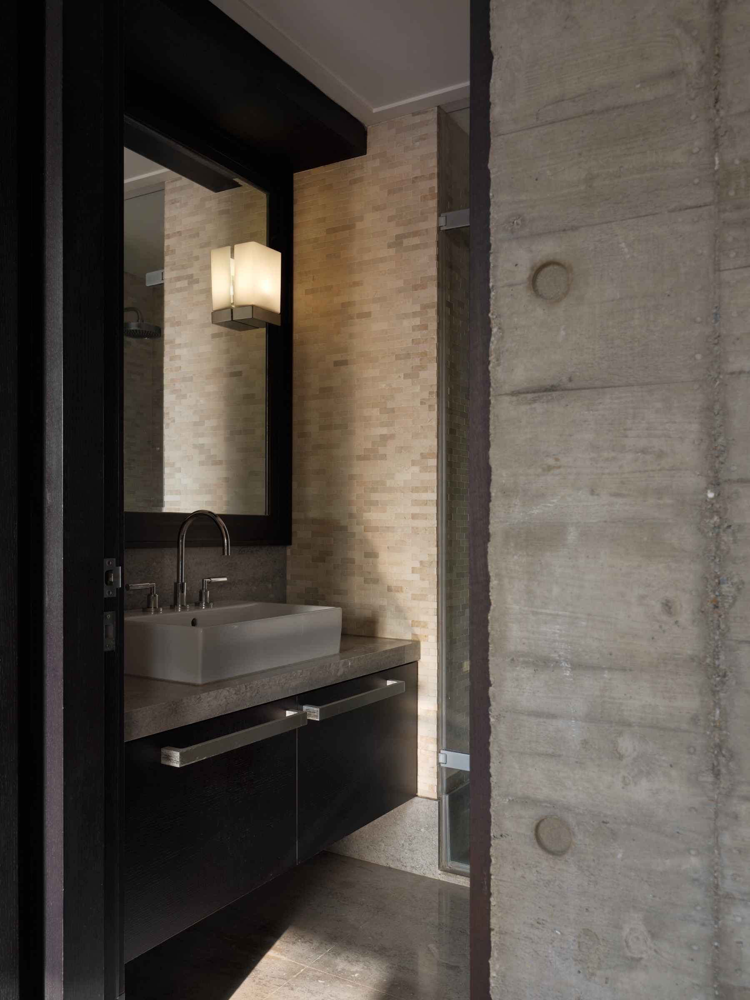
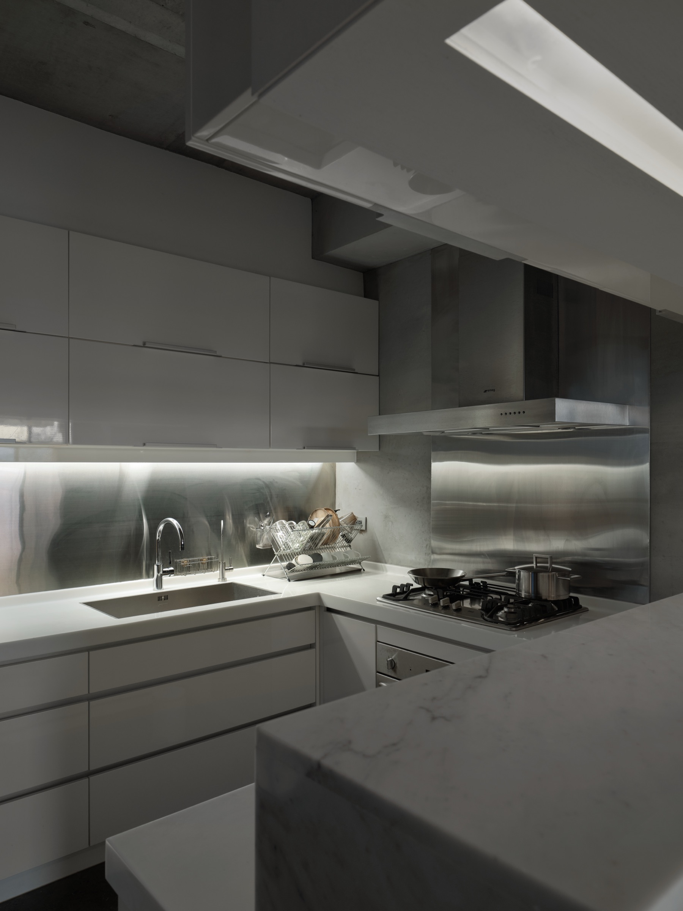